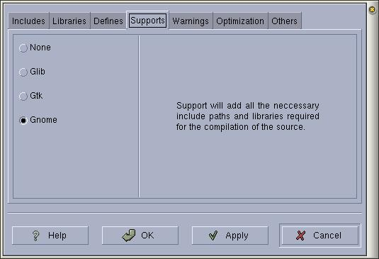

|
|
Anjuta Manual version 0.1Copyright (c) Kh. Naba Kumar Singh |
| Contents(Top) | Index | Shortcuts |
| PREV: Defining macros | UP: Setting Compiler Options | NEXT: Compiler Warnings |
You have have seen in the previous sections how to specify the basic compiling options ( i.e.. includes, library paths, libraries and defines). This process is a cumbersome when you want to use some of the standard ( meaning popular ) libraries (Such as gtk libraries, gnome libraries etc. Also it may lead to inconsistencies when you distribute your project. To facilitate easy implementation of these libraries and to avoid inconsistencies, the developers of such libraries usually supply a configuration program (usually called *-config) along with their libraries.
Well, that's the theory part. Now the practical part. You don't have to bother about the library config programs. Anjuta will do the difficult parts for you. You just have to mention the particular support you want to use for your project.
Specifying support:
Activate the menu item 'Settings/Compiler options' and Select the 'Supports' page in the settings dialog box.
Select the support you want to add to your program.
Basically, It will automatically set all the include paths and the libraries necessary for the required support. You don't need to set the include paths and the libraries manually.
Presently, It has only three supports, namely, glib, gtk and gnome.
I am planning to add more in the coming releases. Till then be satisfied with the given three :).

Things to note:
Remember, once you have specified the support, you don't have to specify the basic compiler options such as defines, libraries, includes etc. Just forget about them. Only for this support, you will not specify the basic compiler options. You may need to supply these for the other things you are using besides the standard supports.